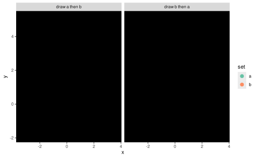

Blend ggplot2 layers (Layer operation)
Source:R/class-operation-blend.R, R/operation-blend.R
blend.RdBlend objects within a single layer (geom) or across multiple layers (geoms)
using graphical blending modes, such as "multiply", "overlay", etc. Uses
the built-in compositing support in graphical devices added in R 4.2.
Arguments
- object
One of:
A layer-like object: applies this operation to the layer.
A missing argument: creates an operation
A string (character vector of length 1) giving the name of a blend, which takes the place of the
blendargument.
- blend
The blend mode to use. The default mode,
"over", corresponds to the "usual" blend mode of drawing objects on top of each other. The list of supported blend modes depends on your graphical device (see Murrell 2021), and are listed indev.capabilities()$compositing. Blend modes can include:"clear","source","over","in","out","atop","dest","dest.over","dest.in","dest.out","dest.atop","xor","add","saturate","multiply","screen","overlay","darken","lighten","color.dodge","color.burn","hard.light","soft.light","difference", and"exclusion"Blend modes like
"multiply","darken", and"lighten"are particularly useful as they are commutative: the result is the same whichever order they are applied in.A warning is issued if the current graphics device does not appear to support the requested blend mode. In some cases this warning may be spurious, so it can be disabled by setting
options(ggblend.check_blend = FALSE).- alpha
A numeric between
0and1(inclusive). The opacity of a transparency mask applied to objects prior to blending.
Value
A layer-like object (if object is layer-like) or an operation (if not).
Details
If object is a single layer / geometry and the partition aesthetic is not set, every
graphical object (grob()) output by the geometry will be blended together
using the blend blend mode. If alpha != 1, a transparency mask with the
provided alpha level will be applied to each grob before blending.
If object is a single layer / geometry and the partition aesthetic is set,
the geometry will be rendered for each subset of the data defined by the
partition aesthetic, a transparency mask with the provided alpha level
will be applied to each resulting group as a whole (if alpha != 1), then these groups
will be blended together using the blend blend mode.
If object is a list of layers / geometries, those layers will be rendered
separately, a transparency mask with the provided alpha level
will be applied to each layer as a whole (if alpha != 1), then these layers
will be blended together using the blend blend mode.
If a blend() is multiplied by a list of layers using *, it acts on each
layer individually (as if each layer were passed to blend()).
Supported devices
Blending is not currently supported by all graphics devices. As of this writing,
at least png(type = "cairo"), svg(), and cairo_pdf() are known to support
blending.
blend() attempts to auto-detect support for blending using dev.capabilities().
You may receive a warning when using blend() if it appears blending is not
supported by the current graphics device. This warning either means (1)
your graphics device does not support blending (in which case you should
switch to one that does) or (2) your graphics device
supports blending but incorrectly reports that it does not. Unfortunately,
not all graphics devices that support blending appear to correctly report
that they support blending, so even if auto-detection fails, blend() will
still attempt to apply the blend, just in case.
If the warning is issued and the output is still correctly blended, this is
likely a bug in the graphics device. You can report the bug to the authors of
the graphics device if you wish; in the mean time, you can use
options(ggblend.check_blend = FALSE) to disable the check.
References
Murrell, Paul (2021): Groups, Compositing Operators, and Affine Transformations in R Graphics. The University of Auckland. Report. doi:10.17608/k6.auckland.17009120.v1 .
Examples
library(ggplot2)
# create two versions of a dataset, where draw order can affect output
set.seed(1234)
df_a = data.frame(x = rnorm(500, 0), y = rnorm(500, 1), set = "a")
df_b = data.frame(x = rnorm(500, 1), y = rnorm(500, 2), set = "b")
df_ab = rbind(df_a, df_b) |>
transform(order = "draw a then b")
df_ba = rbind(df_b, df_a) |>
transform(order = "draw b then a")
df = rbind(df_ab, df_ba)
# Using the "darken" blend mode, draw order does not matter:
df |>
ggplot(aes(x, y, color = set)) +
geom_point(size = 3) |> blend("darken") +
scale_color_brewer(palette = "Set2") +
facet_grid(~ order)
# Using the "multiply" blend mode, we can see density within groups:
df |>
ggplot(aes(x, y, color = set)) +
geom_point(size = 3) |> blend("multiply") +
scale_color_brewer(palette = "Set2") +
facet_grid(~ order)
# blend() on a single geom by default blends all grobs in that geom together
# using the requested blend mode. If we wish to blend within specific data
# subsets using normal blending ("over") but between subsets using the
# requested blend mode, we can set the partition aesthetic. This will
# make "multiply" behave more like "darken":
df |>
ggplot(aes(x, y, color = set, partition = set)) +
geom_point(size = 3) |> blend("multiply") +
scale_color_brewer(palette = "Set2") +
facet_grid(~ order)

# We can also blend lists of geoms together; these geoms are rendered using
# normal ("over") blending (unless a blend() call is applied to a specific
# sub-layer, as in the first layer below) and then blended together using
# the requested blend mode.
df |>
ggplot(aes(x, y, color = set)) +
list(
geom_point(size = 3) |> blend("darken"),
geom_vline(xintercept = 0, color = "gray75", linewidth = 1.5),
geom_hline(yintercept = 0, color = "gray75", linewidth = 1.5)
) |> blend("hard.light") +
scale_color_brewer(palette = "Set2") +
facet_grid(~ order)